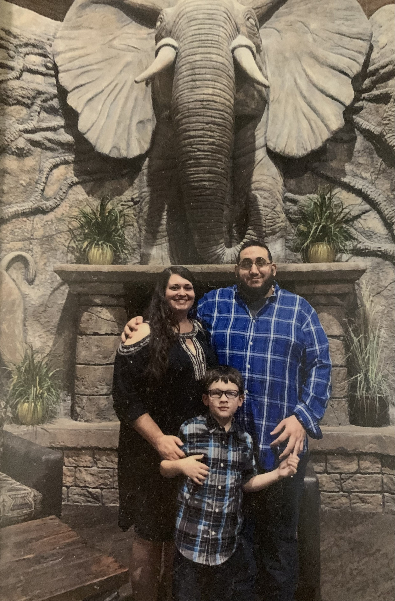

Home
My name is Annette, and I am 34 years old. I am happily married to my husband, Ameer and we have a 10-year-old son, Adam. We love to spend as much time together as possible, as well as with our family and friends. We look forward to all adventures we have and God willing, will go on. Aside from family, my hobbies include crochet, painting, video games, music, and crafting. I am currently enrolled in the Associates in Helpdesk Technician degree at McHenry County College. After taking numerous courses for this degree, I am debating switching to a four-year university for a Bachelors in Computer Science degree. My favorite class this semester is Web Development.